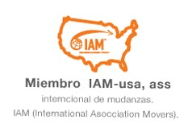
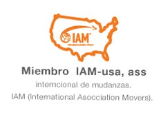
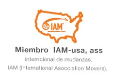

QUIENES SOMOS


 



CON SOLO ENTREGARLO, SABRA QUE HA LEGADO

Unidos a el conocimiento experiencia e infraestructura de agentes internacionales, Iam y ara. Haremos que las mudanzas internacionales y la carga general lleguen con seguridad, competividad, marca, oportunidad, comodidad y presentacion a los paises de destino. Mediante la modalidad de la entrega puerta a puerta
UNIREMOS a cColombia ubicada entre 2 océanos caudalosos rios y diversidad geogradica con el resto del mundo a travez del comercio internacional
LOGRAREMOS que los sectores DE LOS SERVICIOS logisticos nacionales y su integración internacional con competividad y calidad.
CONSOLIDAREMOS la evolución y cultura en servicios logísticos internacionales Door To Door en Colombia. La internacionalizacion de los sectires logísticos nacionales Para que Colombia COMPITA en la globalizacion como cluster logístico de talla mundial.
Diseñar sevicios internacionales que satisfagan la demanda de la GLOBALIZACIÓN ECONÓMICA en Colombia y Latinomaérica.
IMPULSAR FOWARDS
asociaciones, organizaciones, sectores de logística y certificadoras de calidad logística en Latinoamérica y otors continentes.
COMPROMETIDOS en desarrollar de los servicios internacionales hemos apoyado a el gobierno con recomendaciones; algunas optadas en Documento CONPES 3547, mano de obra calificada como medio de empleo, paz y competividad en el comercio internacional GESTIONAREMOS inversión pública, privada o internacionalpara ejecutar programas de empaque MULTIMODAL con estándares intenacionales con el objetiivo de formar un capital humano, para la ejecución de los tratados de libre comercio, aportando a el PIB del País usando variables logísticas de la eficiencia, oportunidad y competividad.
SEREMOS Muestra Cultural, apoyaremos a los sectores nacionales en el desarrollo de la eficiencia en servicios logísticos internacionales.
internacional de transportes empaques de colombia,
Hacemos posible sus enseres, articulos y carga de toda naturaleza, lleguen puerta a puerta desde y para cualquier pais.

LOGO MMB CONSULTORIAS LATINOAMERICANAS DE COLOMBIA
Profesionales, Especializados Colombianos, Contadores, Abogados, Medio Ambiente, Diseño Gráfico, Traductores, Ofrecemos
Workshops internacionales, congresos, estudios IATA , RIN, AMSA, tributarios contables, traductores oficiales, integrados a los agentes de logística internacional en cada País, hacemos posibles exportaciones e importaciones de
Cobertura puerta a puerta soportados con reaseguradoraes expertos en la operación Internacional y ateción de siniestrso en 160 paises para la seguridad de las mudanzaas importaciones y exportaciones a 160 paises.
TRANSPORTAMOS VIA AEREA MARITIMA terrestre férreo, PUERTA A PUERTA A 160 paises, voluminizamos logrando eficiencia en los medios de transporte, INTEGRAMOS proveedor, YCOMPRADOR Y FAMILIAS a travez de las mudanzas intl, enregamos con beneficio de INVENTARIOS
Elaboramos reservas en origen y destino para importaciones recibimos y entregamos con beneficio de inventario a 160 Países
EXPORTACIONES E IMPORTACIONES A 160 PAISES.
DISEÑAMOS modelos logísticos de costos, presupuestos de la distribuición fisica intl de sus productos en el exterior como base para la POYECCIÓN y fijación precios de venta 45 años cruzando puertos y aeropuertos en 5 continentes.
ASESORAMOS Y PLANIFICAMOS ADUANAS internacionales Preparación de documentos de origen y destino, estimados de costosd de nacionalización, Planificación legal de inspecciones en puertos y aeropuertos, en 16 países, Planificacion legal y operativa con base a los tratados de libre comercio
PREPARAMOS LA CARGA Empaque, embalaje, cubicamos, voluminización de acuerdo a la naturaleza del producto y la via de transporte con requerimientos del país de origen y destino.
ENTREGAMOS puerta a puerta, carga general, muestras para ferias internacionales desde y para todos los paises, exportación, importaciónc re exportación y re importación, integramos porveedores y comprador con la respondabilidad y Beneficio de inventarios.
Diseñamos servicios internacionales tranversales somos expertos 45 años en manejo de puertos, aeropuertos, tranporte multimodal, Aduanas internacionales, empaque, embalaje trabajamos en red con recurso humano calificado en 160 países diseñamos convenciones, preparación de funcionarios con idoneidad para lograr competitividad ingreso y trabajo en su unidad productiva a través de la logísticainternacional transversal y el comercio.
Exportamos e importamos con seguridad, conetividad, marca, eficiencia y comodidad entrega de la carga a 160 países, Door to door con beneficio de inventario.
PREPARAMOS LA CARGA
Empaque, embalaje, cubicamos, voluminización, de a la naturaleza del producto y la via de transporte con requerimientos del país de origen y destino.
ENTREGAMOS puerta a puerta, carga gneral, muestras para ferias internacionales, desde y para todos los paises, exportación importación, Brindamos seguridad competitividad oportunidad presentación y marca.

Recurso Humano profesional idóneo, experto en leyes impuestos, aduanas internacionales, tratados de libre comercio, asuntos Contables y comerciales y leyes CONSULTORIA para la inversión extranjera, hacemos el comercio internacional, Confiablr y seguro a través de la modalidad de la entrega. Integrados con custmos, borkers y agencias de aduanas NACIONALES E INTERNACIONALES 45 añosd dy de servicios , con el soporte de la firma
Re exportación y re importación, integramos proveedores y comprador con responsabilidad y Brnrfivio de inventarios.
Seguridad legal, en los 5 continetes en red con agentes IAM, ARA Y FAIM.
<documentación, aranceles, inspecciones antinarcóticos, antiterrorismo., FDS, ley de embalajes, medio ambiente, agricultura, patrimonio nacional y licencias en forma ágil y segura en los 5 continentes.
Facilitamos el desarrollo del comercio INTEGRAMOS a nuestros servicios a la traducción de documento: ingles, francés, alemán, portugués, hebreo, italiano, mandarin, neerlandés, sueco y otros.
Contamos con profesionales en contaduría para la planificación y proyección de costos logísticos, bases para la fijación de precios de venta en todas las modalidades, CIF-FQB puerta a puerta.. para feruas convenciones y presupuestos anuales de costos logísticos en sus empresas.
TRANSPORTAMOS VIA AEREA MARITIMA PUERTA A PUERTA a 160 paises, voluminizamos logrando eficiente en los medios transporte, INTEGRAMOS proveedor Y COMPRADOR entregamos con beneficio de INVETARIO.
BODEGAS en red en 160 PAISES Para la distribuición física unternacional en las regiones America, Europa, Asia, Africa e Inglaterra.
BODEGAS CALIFICADAS AMSA CON STANDARES INTL DE CONTROL Y SEGURIDAD asociación, bodegas INTERGRADAS Y CONTROLADAS por nuestros agentes internacionales ofrecemos control cuidad y seguridad.
Cada producto de su carga será tratado de acuerdo a su naturaleza con seguridad competividad Presentación, marca y comodidad en la ciudad y país de destino.
En RED almacenes de depósito, zonas aduaneras en 160 PAISES, facilitamos transitos. des consolidación, redistribución y entrega de sus productos en regiones europeas de oriente Usa, Latinoamérica y colombia, manejada por personal experto adscrito a los afentes de la red intl UAM, ARA Y FAIM.
SOPORTE de aduanas en Europa, Asia y América, controladas por 1920 agentese internacionales logo AMSA ENTREGAMOS E INFORMAMOS; Reportes logísticos y operativos personalizados de sus CARGAS, ENTREGAS con beneficio de inventario y profesionalismo.
SEGUROS INTERNACIONALES PUERTA A PUERTA
en todas las modalidades, Cif, Fob o `puerta a puerta para sus exportaciones e importaciones, aseguradoras expertas en la valoración
CONTACTENOS para tener el gusto de atenderle
intrapackdecolombia@intrapackdecolombia.co
LA GLOBALIZACIÓN DE LA ECONOMIA demanda servicios internacionales flecibles para los exportadores e importadores y economías a escala.
TRANSPORTAMOS VIA AREA MARITIMA PUERTA A PUERTA A 160 àises, columinizamos logrando eficiencia en los medios de transporte.
INTEGRAMOS proveedor Y COMPRADOR entregamos con beneficio de INVENTARIO.
EXPORTACIONES E IMPORTACIONES 160 paises Carga door to door.
(ver comercio internacional)
Diseñamos el modelo logístico, competitivos, vlaoramos la distribucíon física internacional de sus productos a los 5 continentes.
Elaboramos presupuestos y modelos de esportación e importación desde y para cualquier país, soportamos el mercadeo y la comercialización internacionales, ejecutamos proyección de costos logísticos para la obtención de precios de ventas en todas las modalidades
(ver compercio internacional)
Preparamos al importador o exportador: desarrollamos su capacidad frente a vendedores y compradores internacionales, proyección de costos y posicionamiento de marca a traves de la modalidad de la entrega. Ferias y Seminarios.
Tip de interés en logistica nacional e internacional. Expertos de difernetes sectores de la logística, experiencias, las Pymes, sus cuellos de botella, sus soluciones y éxitos. leyes puertos aéropuertos. Todo en Notipack de colombia.